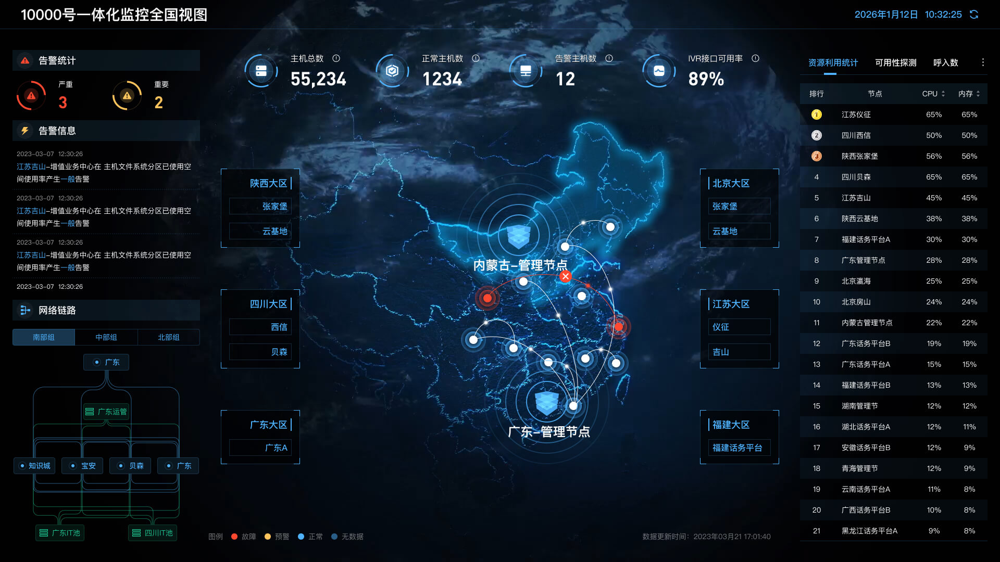
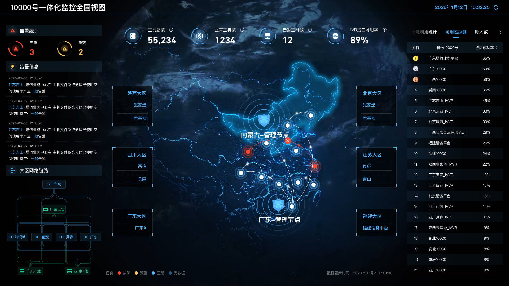
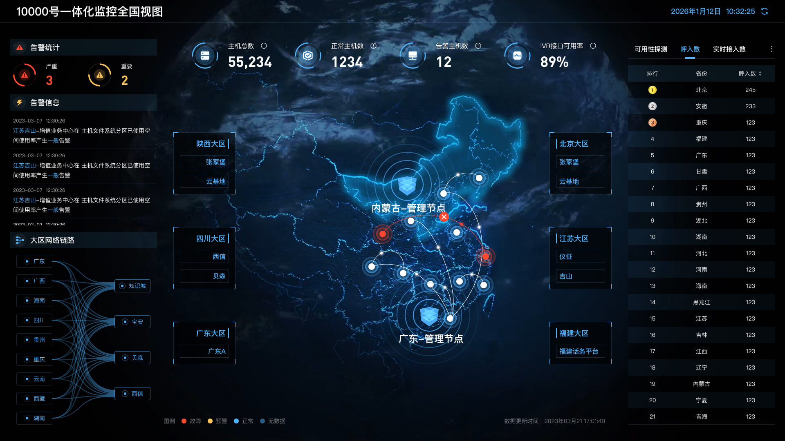
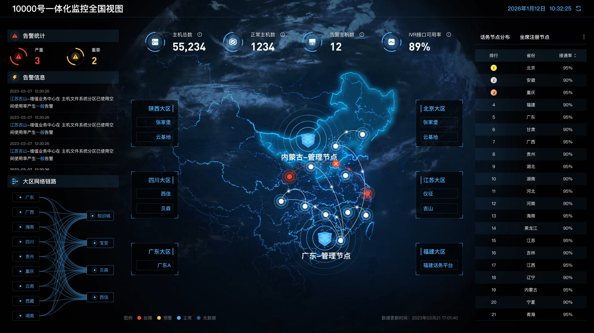
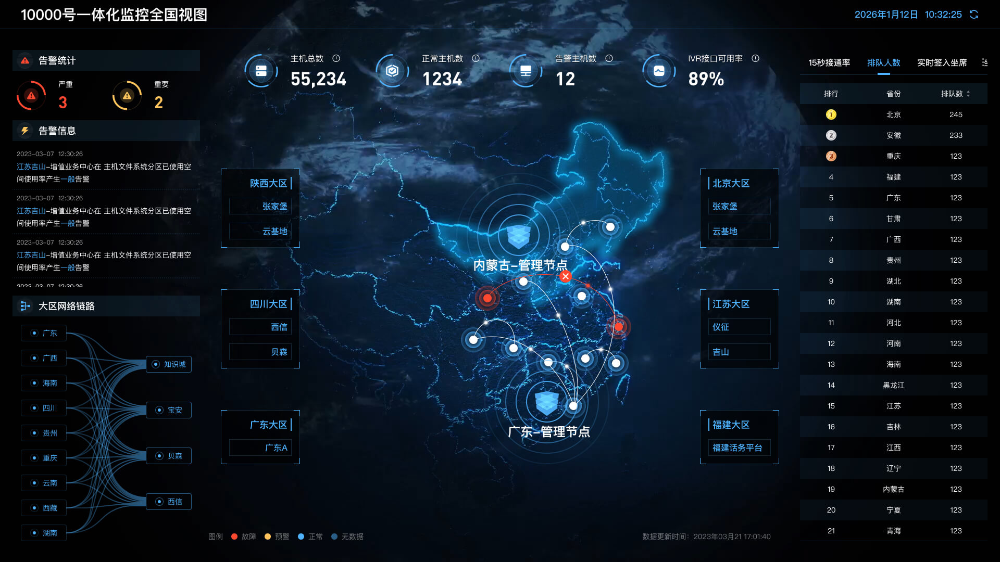
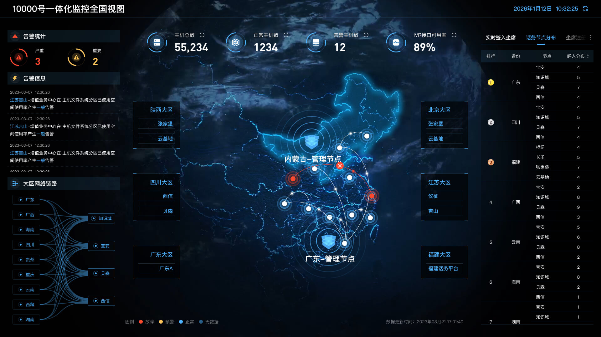
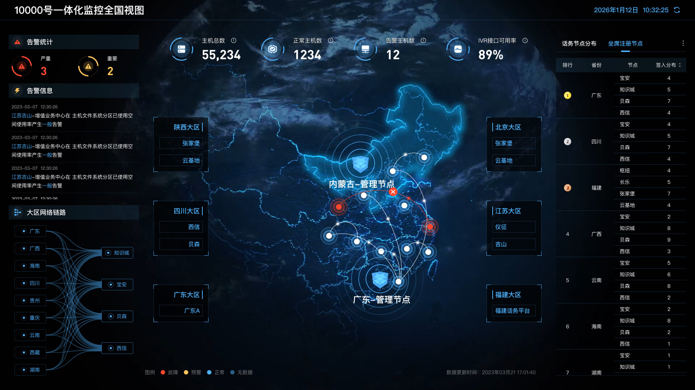
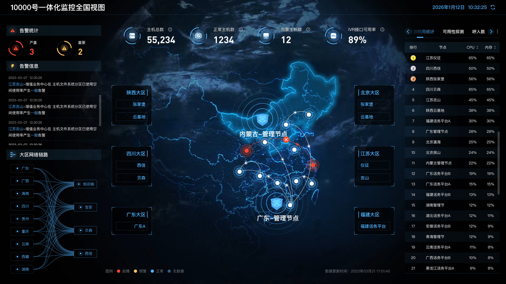
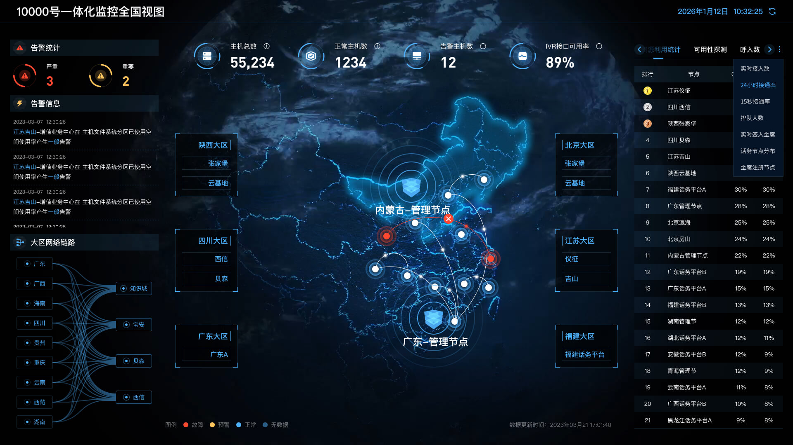

面向中国电信 10000 号客服系统的一体化监控大屏，采用深色科技风格设计，融合数据可视化、地理信息映射、实时告警监控与网络拓扑展示。覆盖资源利用、可用性探测、话务分布、坐席状态等 12 个核心监控维度，7×24 小时全天候保障客服系统稳定运行。
12 个核心监控视图，覆盖资源利用、话务统计、坐席管理、网络拓扑等全链路监控场景。采用三栏式大屏布局，中央地图可视化为核心视觉焦点，左侧告警与拓扑信息，右侧数据排名与多维度切换。









采用分层架构设计，从数据采集到可视化展示，构建完整的一体化监控体系。
深色科技风格设计体系，采用高对比度霓虹光效与玻璃拟态（Glassmorphism），适合 7×24 小时监控大屏场景。所有色彩遵循语义化原则，确保运维人员快速识别状态。
覆盖基础设施监控、话务运营、坐席管理、网络拓扑四大领域，构建全方位一体化监控体系。